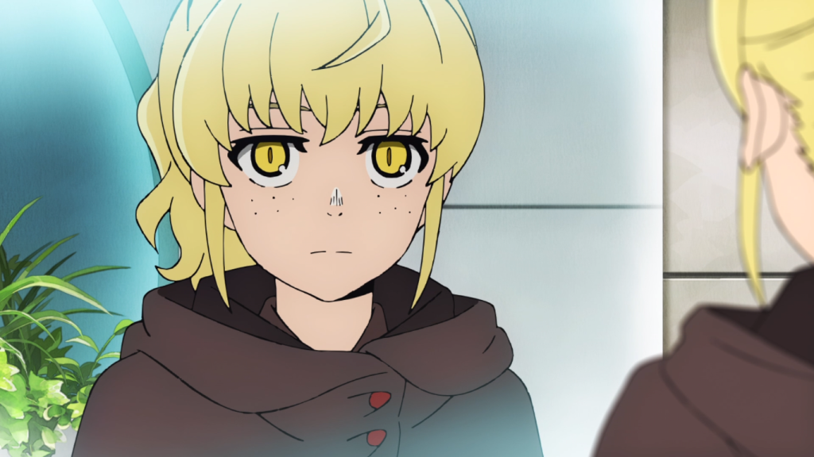

Rachel
História: Rachel é uma das personagens mais complexas e contraditórias de *Tower of God*. Ela cresceu em uma caverna com Baam e, apesar de sua relação próxima com ele, seus objetivos pessoais acabam a afastando de Baam. Sua principal motivação é escalar a Torre para alcançar seus próprios objetivos, mesmo que isso signifique trair a confiança de Baam.
Poderes: Rachel não possui habilidades extraordinárias como Baam ou outros personagens da Torre, mas sua astúcia, manipulação e inteligência a tornam uma adversária perigosa. Ela possui um vasto conhecimento da Torre e usa isso para seus próprios fins.
Papel no Anime: Rachel é a principal antagonista no início da história, já que suas ações, motivadas pelo desejo de escalar a Torre a todo custo, colocam Baam em perigo diversas vezes. Sua relação com Baam é marcada por traições e manipulações, o que torna seu papel cada vez mais essencial na trama da série.
Voltar à galeria